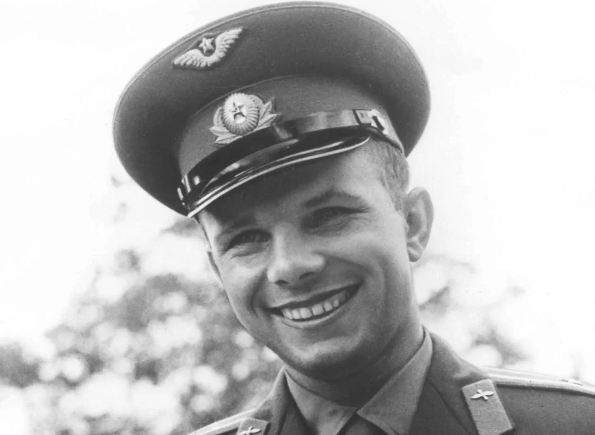

В 1959 г. Гагарину присвоено было звание старшего лейтенанта. Тогда же он стал военным летчиком первого класса. В это время начался отбор кандидатов для первого состава отряда космонавтов. Узнав об этом, Юрий Алексеевич немедленно подал рапорт, в котором выразил просьбу зачислить его в этот отряд.
Главным критерием отбора претендентов стали не их заслуги либо навыки, а физические данные. Первые космические корабли обладали существенным ограничениями по грузоподъемности и размерам. На этот раз небольшой рост, из-за которого Юрия едва не отчислили из училища, сослужил ему хорошую службу. Он стал одним из тех факторов, благодаря которым заявка молодого офицера на зачисление в отряд космонавтов в итоге была одобрена. 
Юрий Гагарин стал одним из двадцати членов отряда космонавтов. К тренировкам он приступил весной 1960 года.В отряде была жесточайшая конкуренция. Несмотря на это, Юрий пользовался всеобщей любовью. Доброжелательный, сильный, надежный юноше ни к кому не испытывал зависти, упорно работал и с легкостью брал инициативу на себя. Он обожал небо и всецело отдавался занятиям. Когда в отряде был проведен анонимный опрос на предмет того, кто более всех подходит для самого первого полета в космическое пространство, большинство назвало Гагарина. Хотя Юрий ни в одной дисциплине не был лидером, по сочетанию показателей психологической устойчивости, черт характера и имеющихся навыков именно он оказался лучше всех приспособлен для полета в космическое пространство.